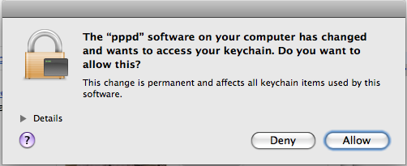

BlackBerry Bold PPPD Replacement
Please Note: I have been told that this patched version is no longer necessary on Snow Leopard and, in fact, causes problems. Please do not install the patched pppd on Snow Leopard.
This forum thread over on the Crackberry forums covers the inconsistent behavior of Bluetooth tethering that users are having with newer BlackBerry Bold firmware versions. Many reports in the thread talk about the fact that Bold users on firmware greater than 4.6.0.2xx are unable to negotiate a tethered connection or the negotiation may be sporadic.
After lots of discussion with other users, comparison of successful ppp negotiations on Ubuntu Linux and spending time looking at the Apple Darwin pppd code I theorized that the negotiation was happening too quickly. My hope was that if the negotiation were slowed down, that it would complete successfully. This turned out to be correct and this page provides a downloadable binary that appears to work for many of the people that were having trouble prior to using this binary.
If you do not have trouble negotiating a tethered connection with your phone, this software is not necessary. It is *possible* that this software may solve problems with other devices that fail to negotiate. That has not been tested, nor is there any way to know. It is equally
as likely that this replacement may crater your laptop.
Discussion about this package should be directed to the Crackberry Forums thread.
Table of Contents
Warning
WARNING — WARNING — WARNING
!!! THERE ARE ABSOLUTELY NO GUARANTEES FOR THIS SOFTWARE !!!
!!! USE AT YOUR OWN RISK !!!
!!! Not supported or condoned by Apple !!!
This replacement for pppd replaces the default Apple pppd. This implementation *appears* to work on Leopard 10.5.6 and 10.5.7 on Intel hardware.
- It is not tested in any significant way.
- It will not work on PowerPC machines.
- It may not work at all.
- It will likely be replaced the next time you get a software update from Apple.
YOU HAVE BEEN WARNED!!!
Download
The replacement pppd executable is packaged as an installable package .
Installation
Follow these steps to install the downloaded file:
- Double-click the DMG file to mount the disk image
- Double-click the “BlackBerry Bold PPPD Replacement” PKG file
- Follow the prompts to install the replacement file
- Set up your tethered Bluetooth connection as described in this Crackberry Forum thread .
-
Allow the new binary to access the keychain. When connecting with the new
binary, you will likely see the following warning. You should choose to
“Allow” the access.

Uninstalling
There is no automated uninstallation provided for this package.
This installation will copy the current /usr/sbin/pppd file to a backup based on the date/time at which the installation is done. There is no automated uninstallation option if things don’t work out. If you find that the new binary does not solve your problems or you want to remove it for some reason, you must use Terminal.app in order to back out the
installation. For instance, the /usr/sbin directory contents may look something like:
-r-s--x--x 1 root wheel 314124 May 23 12:28 pppd -r-s--x--x 1 root wheel 314124 May 23 12:28 pppd.2009-05-23_14-48-16
To back out the installation, the following commands would be entered from Terminal.app:
- sudo rm /usr/sbin/pppd
- sudo mv /usr/sbin/pppd.2009-05-23_14-48-16 /usr/sbin/pppd
- sudo chown root:wheel
- sudo chmod 4511 /usr/sbin/pppd
Make sure that the name of the file “pppd.2009-05-23_14-28-16” is changed appropriately to match the name of the actual file that was backed up on your system at the time of installation.
Source Code
The source changes implemented in this binary package can be found in this ppp.patch . If you are adventurous, feel free to use this patch file. Please do not ask for help with this. If you don’t know how to deal with patches or building of source, then you should just use the binary. A version of this patch has been submitted to Apple for potential inclusion into future versions of pppd. The bug number for this is 6917800.
The following *high level* steps were taken to get this built. The details must be inferred as necessary. Again, please don’t ask for help with this.
- Download ppp-314.0.2.tar.gz from the Apple Open Source web site .
- Extract tar.gz file to file system
- Set $PPP_SRC environment variable to point to extracted contents
-
In Helpers/pppd/sys-MacOSX.c
- Comment out references to “#include <SystemConfiguration/SCPrivate.h>”
- Change#include <ppp/pppcontroller_types.h>to be#include “../../Controller/pppcontroller_types.h”
-
Execute
“ln -s
/System/Library/Frameworks/CoreServices.framework/Frameworks/CarbonCore.framework/Headers
$PPP_SRC/Family/CarbonCore” -
In Xcode
- Select target “pppd (Tool)”
- From context menu, choose “Get Info”
- Add “$PPP_SRC/Family” to the “Header Search Paths” for “All Configurations”
- From context menu, choose “Build pppd (Tool)”This can also be done from command line using “xcodebuild -target “pppd (Tool)””
- The result ends up in $PPP_SRC/build/Default/pppd